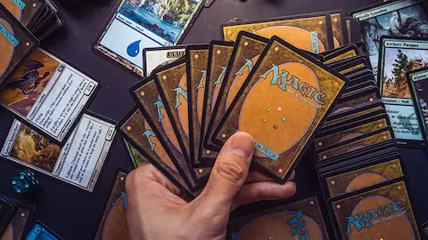

Reality Fracture está a 25 días del lanzamiento y la temporada de spoilers de esta semana está entregando sus reveals más importantes. El Eco de Nissa — una versión donde la Planeswalker élfica nunca reconectó con la vida tras los eventos de War of the Spark y se convirtió en una figura de entropía absoluta — ya está siendo analizado por los jugadores de Standard como uno de los finishers de midrange más sólidos del set. Su habilidad pasiva, que convierte terrenos en criaturas al activarla, abre líneas de combinación que los jugadores de Commander llevan días construyendo en teoría.
El reveal narrativo más importante de la semana confirma que el arco Metronome se cierra de la forma que la comunidad más veterana esperaba: Jace Beleren, el creador involuntario del Echoverse, tendrá que destruir el plano que construyó para salvar el multiverso principal. Los Ecos — las versiones alternativas de todos los Planeswalkers que han habitado el Echoverse — no sobreviven al final del set. Es un cierre definitivo que elimina la posibilidad de seguir usando el concepto en futuros sets, lo que algunos leen como un gesto de honestidad narrativa por parte de Wizards y otros como un error de diseño que corta una veta creativa muy rica.
El prerrelease de Reality Fracture arranca el 10 de octubre en tiendas de todo el mundo. Este año la coincidencia del prerrelease con la primera semana del Play-In Stage de los Worlds de League of Legends ha generado curiosidad sobre si la audiencia del Pro Tour de Magic — que también se celebra en octubre — competirá por atención con el circo mediático del LoL. La respuesta histórica es que coexisten perfectamente porque apelan a audiencias distintas aunque con mucha superposición. Reality Fracture cierra el ciclo de 2026 de Magic de la forma más satisfactoria posible: tras Final Fantasy, Marvel, El Hobbit y tres sets de crossover, el año termina con un set completamente del multiverso propio de Magic que Wizards confirmó en Gen Con que era la apuesta deliberada para darle a la comunidad veterana el final de saga que merecía. Lo que viene en 2027 — el nuevo set de Magic puro que se presentó en Indianapolis — ya tiene a la comunidad intrigada sobre hacia dónde va el lore después del Echoverse.